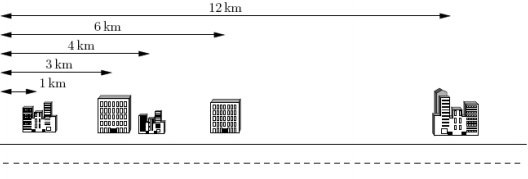

你在一家 IT 公司为大型写字楼或办公楼（offices）的计算机数据做备份。然而数据备份的工作是枯燥乏味
的，因此你想设计一个系统让不同的办公楼彼此之间互相备份，而你则坐在家中尽享计算机游戏的乐趣。已知办公
楼都位于同一条街上。你决定给这些办公楼配对（两个一组）。每一对办公楼可以通过在这两个建筑物之间铺设网
络电缆使得它们可以互相备份。然而，网络电缆的费用很高。当地电信公司仅能为你提供 K 条网络电缆，这意味
着你仅能为 K 对办公楼（或总计2K个办公楼）安排备份。任一个办公楼都属于唯一的配对组（换句话说，这 2K
个办公楼一定是相异的）。此外，电信公司需按网络电缆的长度（公里数）收费。因而，你需要选择这 K 对办公
楼使得电缆的总长度尽可能短。换句话说，你需要选择这 K 对办公楼，使得每一对办公楼之间的距离之和（总距
离）尽可能小。下面给出一个示例，假定你有 5 个客户，其办公楼都在一条街上，如下图所示。这 5 个办公楼分
别位于距离大街起点 1km, 3km, 4km, 6km 和 12km 处。电信公司仅为你提供 K=2 条电缆。

上例中最好的配对方案是将第 1 个和第 2 个办公楼相连，第 3 个和第 4 个办公楼相连。这样可按要求使用
K=2 条电缆。第 1 条电缆的长度是 3km-1km=2km ，第 2 条电缆的长度是 6km-4km=2km。这种配对方案需要总长
4km 的网络电缆，满足距离之和最小的要求。